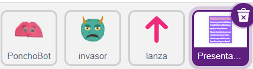
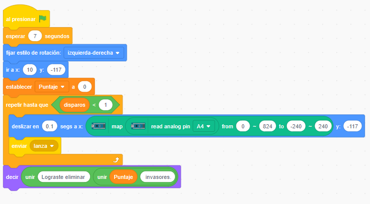
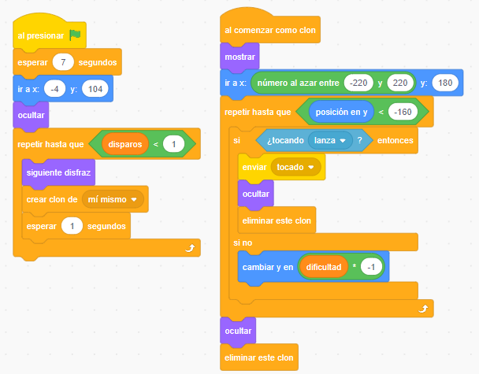
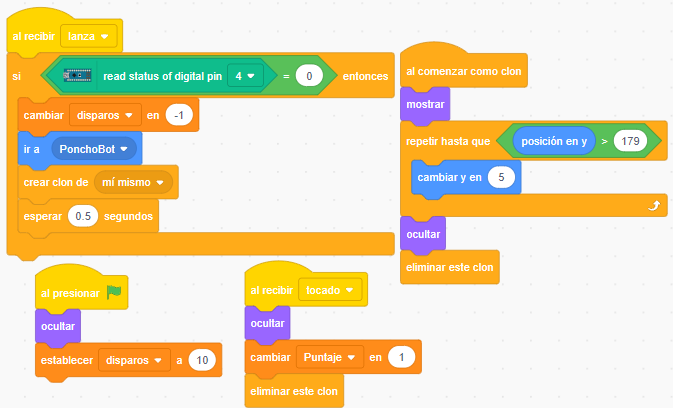
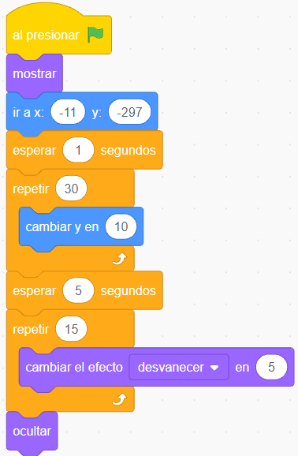

La programación
El juego consiste en eliminar al invasor que desciende en forma aleatoria por la pantalla, tratando de obtener la mayor cantidad de puntos, que se consiguen impactando el proyectil (lanza) contra un invasor. La cantidad de proyectiles está limitada por programa y cuando se agota se termina el juego.
1.- Objetos/Personajes
Tenemos 4 objetos/personajes:

- PonchoBot: encargado de defender disparando lanzas contra el invasor que desciende desde el borde superior.
- invasor: desciende desde el borde superior hasta el inferior o hasta que un proyectil (lanza) lo toque.
- lanza: es el proyectil que parte desde PonchoBot hacia arriba, buscando tocar (eliminar) un invasor.
- Presentación: narrativa del juego que se presenta al inicio, indicando cómo disparar (pulsador) y mover (potenciómtro) a PonchoBot.
Y tenemos 3 variables:
- dificultad: controla la velocidad de descenso de los invasores.
- disparos: controla la cantidad de disparos que realiza PonchoBot al presionar el pulsador. Cuando llega a cero el juefo finaliza.
- Puntaje: suma una unidad cada vez que una lanza toca a un invasor
2.- PonchoBot
Al comienzo se fija una espera de 7 segundos, tiempo que dura la presentación del juego. Luego se define el estilo de rotación (para que PonchoBot no se ponga "patas para arriba"), se fija su ubicación abajo en el centro de la pantalla, se pone el puntaje en cero y se da inicio a un ciclo de repetir hasta que la variable disparos sea menor que 1, o sea se acaben los disparos. Mientras PonchoBot disponga de disparos se deslizará de izquierda a derecha y visceversa, en función del movimiento de la perilla del potenciómetro. También le enviará un mensaje al objeto lanza, que es donde está la lógica de programación encargada del disparo.

3.- Invasor
Lo primero que hace, al igual que PonchoBot, es esperar los 7 segundos que dura la presentación, para comenzar a producir clones de sí mismo. Es decir, a partir de un solo objeto se pueden replicar objetos gemelos, mientras se repita el ciclo condicional repetir hasta que disparos sea menor que uno, es decir, hasta que se acaben los disparos.
Cada clon que "nace", al comenzar su "vida" (al comenzar como clon), se ubica en una posición al azar en el borde superior (y:180) entre los bordes izquierdo (x: -220) y derecho (x:240). Dentro del ciclo condicionado de repetir hasta que la posición de y de invasor sea mayor que la del borde inferior (-160) se coloca otra condición, si al clon de invasor lo está tocando un objeto lanza, entonces se envía un mensaje de tocado al objeto lanza, para que incremente los puntos y elimine su clon (lanza también genera clones). Luego oculta y elimina el clon alcanzado por una lanza.
Si no sucede lo anterior, los clones de invasor siguen cayendo al restarle a y la cantidad que se forma de multiplicar el valor de la variable dificultad por -1. A mayor valor de la variable dificultad, la disminución de y será mayor, por lo que será mayor la velocidad de caída de los clones de invasor, haciendo el juego más difícil.

4.- Lanza
Al recibir el mensaje desde el objeto PonchoBot, el objeto lanza controla si se está presionando el pulsador (D4=0) para iniciar el proceso de lanzar el proyectil o lanza. Disminuye el número de disparos disponibles, se ubica en la misma posición donde está PonchoBot (para dar la sensación de que desde PonchoBot sale el disparo) y crea un clon de lanza. Al iniciar como clon, se repite el ciclo hasta que el clon llegue al borde superior (y >179) incrementando el valor de y en 5 unidades. Si queremos que el proyectil suba más rápido se debe incrementar este valor. Por último, una vez concluído el ciclo repetir, se oculta y se elimina.

5.- Presentación
Simplemente mueve el texto ya escrito como un disfraz desde la parte inferior de la pantalla hacia arriba (efecto marquesina) durante unos 7 segundos y luego desaparece.
